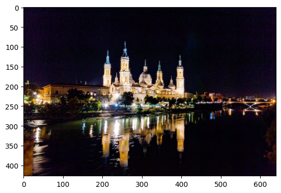

Night Image Enhancement
Imports
We can skip the next cell if neural_de was installed from pip install.
[1]:
import sys
sys.path.append("..")
import time
[2]:
from neural_de.transformations.night_image_enhancer import NightImageEnhancer
import numpy as np
from pathlib import Path
import cv2
import matplotlib.pyplot as plt
%matplotlib inline
2025-03-20 09:12:36.943308: I tensorflow/core/platform/cpu_feature_guard.cc:193] This TensorFlow binary is optimized with oneAPI Deep Neural Network Library (oneDNN) to use the following CPU instructions in performance-critical operations: AVX2 AVX512F AVX512_VNNI FMA
To enable them in other operations, rebuild TensorFlow with the appropriate compiler flags.
2025-03-20 09:12:37.068234: I tensorflow/core/util/util.cc:169] oneDNN custom operations are on. You may see slightly different numerical results due to floating-point round-off errors from different computation orders. To turn them off, set the environment variable `TF_ENABLE_ONEDNN_OPTS=0`.
2025-03-20 09:12:37.073793: W tensorflow/stream_executor/platform/default/dso_loader.cc:64] Could not load dynamic library 'libcudart.so.11.0'; dlerror: libcudart.so.11.0: cannot open shared object file: No such file or directory; LD_LIBRARY_PATH:
2025-03-20 09:12:37.073810: I tensorflow/stream_executor/cuda/cudart_stub.cc:29] Ignore above cudart dlerror if you do not have a GPU set up on your machine.
2025-03-20 09:12:37.101181: E tensorflow/stream_executor/cuda/cuda_blas.cc:2981] Unable to register cuBLAS factory: Attempting to register factory for plugin cuBLAS when one has already been registered
2025-03-20 09:12:37.692840: W tensorflow/stream_executor/platform/default/dso_loader.cc:64] Could not load dynamic library 'libnvinfer.so.7'; dlerror: libnvinfer.so.7: cannot open shared object file: No such file or directory; LD_LIBRARY_PATH:
2025-03-20 09:12:37.692925: W tensorflow/stream_executor/platform/default/dso_loader.cc:64] Could not load dynamic library 'libnvinfer_plugin.so.7'; dlerror: libnvinfer_plugin.so.7: cannot open shared object file: No such file or directory; LD_LIBRARY_PATH:
2025-03-20 09:12:37.692933: W tensorflow/compiler/tf2tensorrt/utils/py_utils.cc:38] TF-TRT Warning: Cannot dlopen some TensorRT libraries. If you would like to use Nvidia GPU with TensorRT, please make sure the missing libraries mentioned above are installed properly.
2025-03-20 09:12:39.677547: W tensorflow/stream_executor/platform/default/dso_loader.cc:64] Could not load dynamic library 'libcusolver.so.11'; dlerror: libcusolver.so.11: cannot open shared object file: No such file or directory; LD_LIBRARY_PATH:
2025-03-20 09:12:39.677606: W tensorflow/core/common_runtime/gpu/gpu_device.cc:1934] Cannot dlopen some GPU libraries. Please make sure the missing libraries mentioned above are installed properly if you would like to use GPU. Follow the guide at https://www.tensorflow.org/install/gpu for how to download and setup the required libraries for your platform.
Skipping registering GPU devices...
Let’s load and display our sample night image :
[3]:
start=time.time()
image_path = Path('../examples/images/night.jpg')
image = cv2.imread(str(image_path))
image = cv2.cvtColor(image, cv2.COLOR_BGR2RGB)
plt.imshow(image)
plt.title(image.shape)
[3]:
Text(0.5, 1.0, '(427, 640, 3)')

Usage
[4]:
purifier = NightImageEnhancer()
import time
t1 = time.time()
print(t1)
purified = purifier.transform([image])
print(time.time()-t1)
[03-20 09:12:40] {/home/jovyan/Maturation/NeuralDE/examples/../neural_de/utils/twe_logger.py:123} INFO - Logger: name: neural_de_logger, handlers: [<StreamHandler stdout (DEBUG)>]
2025-03-20 09:12:44.134903: I tensorflow/core/platform/cpu_feature_guard.cc:193] This TensorFlow binary is optimized with oneAPI Deep Neural Network Library (oneDNN) to use the following CPU instructions in performance-critical operations: AVX2 AVX512F AVX512_VNNI FMA
To enable them in other operations, rebuild TensorFlow with the appropriate compiler flags.
WARNING:tensorflow:No training configuration found in save file, so the model was *not* compiled. Compile it manually.
WARNING:tensorflow:No training configuration found in save file, so the model was *not* compiled. Compile it manually.
[03-20 09:13:53] {/home/jovyan/Maturation/NeuralDE/examples/../neural_de/transformations/night_image_enhancer.py:56} INFO - Model https://tfhub.dev/sayakpaul/maxim_s-2_enhancement_fivek/1 loaded
INFO:neural_de_logger:Model https://tfhub.dev/sayakpaul/maxim_s-2_enhancement_fivek/1 loaded
1742462033.9055552
[03-20 09:13:53] {/home/jovyan/Maturation/NeuralDE/examples/../neural_de/transformations/night_image_enhancer.py:113} INFO - New image shape detected, readying model for size (448, 640)
INFO:neural_de_logger:New image shape detected, readying model for size (448, 640)
[03-20 09:14:11] {/home/jovyan/Maturation/NeuralDE/examples/../neural_de/transformations/night_image_enhancer.py:116} INFO - Model ready for image size (448, 640)
INFO:neural_de_logger:Model ready for image size (448, 640)
1/1 [==============================] - 52s 52s/step
69.70827913284302
[5]:
plt.imshow(purified[0])
end=time.time()
print("temps final : ",end-start)
temps final : 143.55594897270203

[ ]:
[ ]: